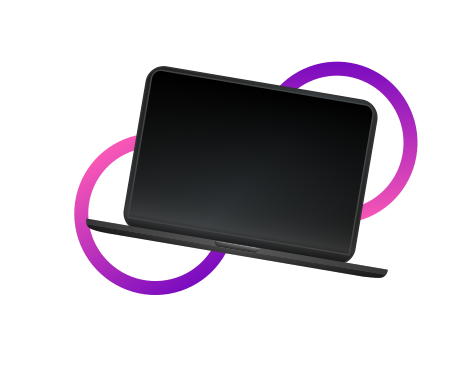

Sobre Nós
Bem-vindo à HowlZ, uma líder dedicada no fornecimento de soluções
de monitoramento de máquinas empresariais para designers digitais
que operam no conforto de seus lares. Combinando a expertise
tecnológica com a compreensão das necessidades únicas dos
profissionais de design, estamos comprometidos em oferecer serviços
de monitoramento abrangentes e eficazes, garantindo o desempenho
contínuo das suas operações.

Nossa Equipe
Nossa equipe é composta por profissionais apaixonados por tecnologia
e design. Entendemos as demandas únicas da indústria criativa e
estamos comprometidos em fornecer soluções que permitam que você
realize seu trabalho com tranquilidade.